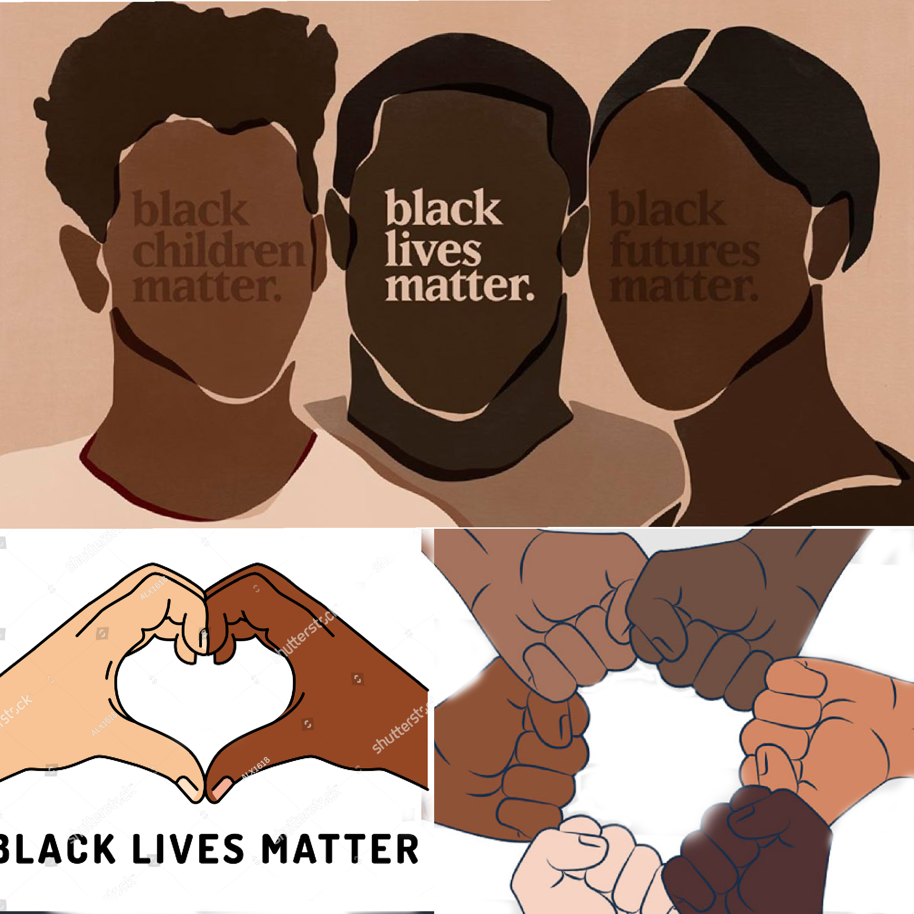
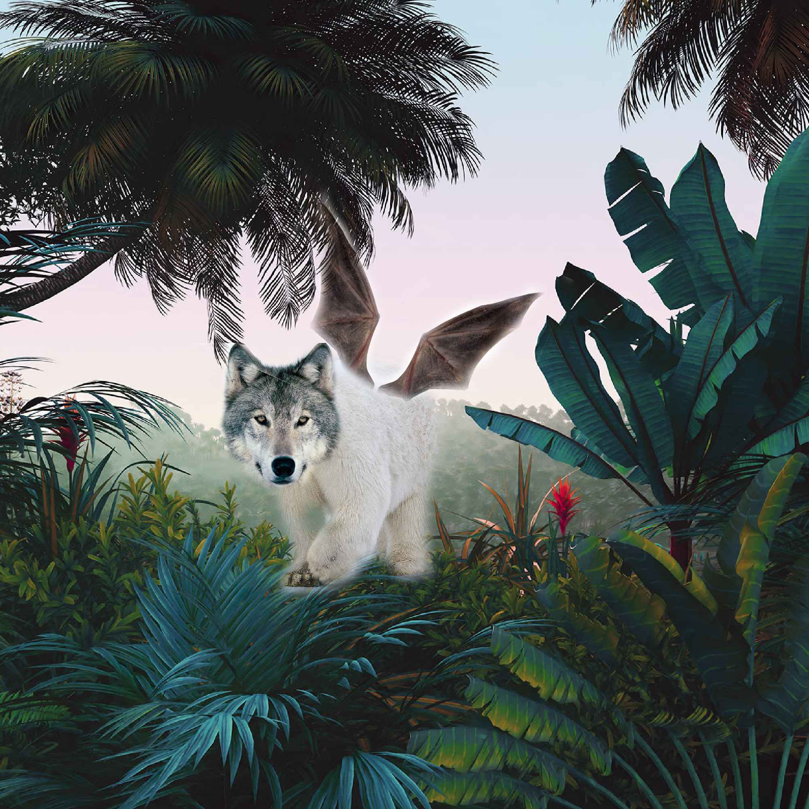

This is my website!
I made this project by creating my shape about 400 pixels wide. Centering my shape in the middle of my screen, then making a copy of my shape. Continuing with duplicating, merging, scaling, and rotating. The shape I used as my base was actually an outline of an elephant. I used light and dark colors of gray. I also used pink as the background to make the shades of gray pop out. I noticed it getting darker because of the shadows behind it. After doing that 5 times some of it got black.
For this project I was tasked with designing my very own custom character. The character I decided to create was an elephant. I used the pencil tools so that it could be easier for me to really color out what I wanted. I started by outlining the elephant then filling it up to my liking, to make it all look up to part. My character isn't wearing any clothing. My character would be in a game that involves both competing and helping with other animals. Their purpose in the game would be to just enjoy working with others even though they might not look the same.

The steps I took to make this kaleidoscope was to edit the photo I chose to my liking. I duplicated them into layers horizontally and vertically and merged them.What happened to my original photo after applying these steps was that it completely changed. It looked totally different then what it originally looked like. It kind of changed color as well, This happened because of all the layers put together in different ways.
My social justice topic is black lives matter. I chose this topic because I felt that this topic needs to be talked about more in school. This is important to me because till this day racism still exists and it does everywhere. I think viewers should know that my topic was to bring awareness to schools because this topic is not really discussed in school honestly. My creative process for the choices I made was making sure I made something that was easily understood by others.
I came up with the animal I created by choosing some animals that can't fly and made them have the ability to do that. I turned my animals into a hybrid by using their different features like the head, wings, and the body of the three animals I picked and sizing them up. I picked a wolf, polar bear and a bat. And what I did was use the polar bear's body and placed the wolf's head on the body. After that I added the bat wings. I used the brush tool to edit out the parts I didn't want. Lastly, I picked out a background I wanted them to be in, which was a jungle. And placed my animal there.